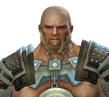

In the Meantime. . .
As well as the Guild Wars Beyond content that is meant to help bridge the two games together, there are also two novels that cover events that occur in the 250 year span. The author descriptions below contain quite a bit of useful information, but I would recommend reading them as they are entertaining in themselves. Many of the characters also appear in Guild Wars 2.
Guild Wars: Ghosts of Ascalon
250 years ago, Ascalon burned . . .
Desperate to defend his land from advancing hordes of bestial charr, King Adelbern summoned the all-powerful Foefire to repel the invaders. But magic can be a double-edged sword – the Foefire burned both charr and human alike. While the charr corpses smoldered, the slain Ascalonians arose again, transformed by their king's rage into ghostly protectors and charged with guarding the realm . . . forever. The once mighty kingdom became a haunted shadow of its former glory.
Centuries later, the descendants of Ascalon, exiled to the nation of Kryta, are besieged on all sides. To save humankind, Queen Jennah seeks to negotiate a treaty with the hated charr. But one obstacle remains. The charr legions won't sign the truce until their most prized possession, the Claw of the Khan-Ur,is returned from the ruins of fallen Ascalon.
Now a mismatched band of adventurers, each plagued by ghosts of their own, sets forth into a haunted, war-torn land to retrieve the Claw. Without the artifact, there is no hope for peace between human and charr – but the undead king who rules Ascalon won't give it up easily, and not everyone wants peace!
Guild Wars: Edge of Destiny
Destiny Called - They Answered
In the dark recesses of Tyria, elder dragons have awoken from millennial slumbers. First came Primordus, which stirred in the Depths forcing the asura to flee to the surface. Half a century later, Jormag awoke and drove the norn from the frozen climes of the Northern Shiverpeaks, corrupting sons and brothers along the way. A generation later, Zhaitan arose in a cataclysmic event that reshaped a continent and flooded the capital of the human nation of Kryta.
The races of Tyria stand on the edge of destiny. Heroes have battled against dragon minions, only to be corrupted into service of the enemy. Armies have marched on the dragons and been swept aside. The dwarves sacrificed their entire race to defeat a single dragon champion. The age of mortals may soon be over.
This is a time for heroes. While the races of Tyria stand apart, six heroic individuals will come together to fight for their people: Eir, the norn huntress with the soul of an artist; Snaff, the asuran genius, and his ambitious assistant Zojja; Rytlock, the ferocious charr warrior in exile; Caithe, a deadly sylvari with deep secrets; and Logan, the valiant human guardian dealing with divided loyalties. Together they become Destiny's Edge. Together they answer the call.
But will it be enough?
My Story - Korgull Ironclad
Guild Wars 2 keeps track of the story line for each character in a journal titled My Story. These are the entries from the journal of Korgull Ironclad. Again, these are direct quotes from the game itself, and not authored by anyone on this website.
I'm Korgull Ironclad. . .
Though trouble may follow me, I overcome it with ferocity. Bear, my spirit guide, teaches that there's a time to be forceful and a time to be gentle.
I work hard to maintain my physical strength and prowess. And yet, in the past, I've been careless. I overindulged in merriment at a moot and woke up the next morning with no memory of what I'd done. It's a mystery I must solve.
I'm a warrior, and I wear no helm on the battlefield. Because of this, my enemies falter when they see the fearless determinations in my eyes.
This is my story.
The Great Hunt
I hunted down prey for the Great Hunt, presented my trophies to the judges, and celebrated with my fellow hunters at the moot. Then I battled and defeated Issormir, a giant ice wurm. These victories earned me glory, and the right to call myself “Slayer of Issormir.” Soon every norn in Hoelbrak will be talking about me!
A Weapon of Legend
I gave the bards something new to sing about with my deeds in Wayfarer Hills. I also received a message from Beigarth the Smith, seeking my help. I'm on my way. Soon everybody will know my name!
Beigarth is asking for help with a special project. He swears that his new blade could cut mountains in half, but it requires a rare metal from the jotun-infested caves near Hoelbrak. This'll be a chance for me to test my might and impress Beigarth.
I bested the jotun in their own cave. Collecting Beigarth's steel was simple once they were out of the way, but the Jormag shrine I discovered is troubling. The jotun were clearly worshiping it. Beigarth will be interested.
I told Eir about the Jormag-worshiping jotun and she wanted to look into it immediately. The Sons of Svanir are always trying to spread Jormag's influence, so Eir and I are headed to confront them and see what they know.
Disciples of the Dragon
Eir and I tried talk, but the Sons of Svanir wanted to fight. Afterward, we forced them to tell us what they're up to: manipulating the jotun leader Korag so he'll make his people worship the ice dragon Jormag. Eir went off to pursue another lead, but I plan to track down Korag and take him out myself.
Echoes of Ages Past
After witnessing jotun history, I took pity on their leader and graciously offered him a chance to discover the truth. If he still serves Jormag when I see him again, I'll destroy him.
Eir and Beigarth both agree that I need a way to fight Korag. Eir suggest Wolf's blessing. Beigarth wants blood from the heart of a mighty predator to enrich his new weapon. Either of these should give me the edge I need.
Out of the Skies
I met Eir at the summit of a great mountain and with her help, I defeated the fearsome griffon Windshear. I've bathed the axe in its blood, as requested. Now to return the weapon to Beigarth and he'll temper it a final time.
I bathed the axe in Windshear's blood and returned it to Beigarth. He was impressed and told me he would finish work on it at once, then send it along with Eir when we set off to take down Korag. I can hardly wait to wield it.
The Last of the Giant-Kings
I defeated the jotun's would-be giant-king Korag. Without him, his followers abandoned their worship of Jormag. The jotun still claim norn lands as their own, so they're still a threat, but at least they won't be fighting for the Sons of Svanir.
Unexpected Visitors
The Gear Warband is missing their chugger attack vehicle. Since I share blame for losing it, I've agreed to serve as a temporary auxiliary and repay the loss. My first duty as a soldier is to join their caravan escort detail.
As a temporary auxiliary member of the Gear warband, I helped defend a charr caravan bound for Twinspur Haven. We also got a lead on the missing chugger: it was last seen heading for Crossroads Haven, so that's the next stop.
Don't Leave Your Toys Out
I helped the Gear Warband defend Crossroads Haven from a grawl attack. Afterward, we got a lead on the missing machine. The dredge took it, so we're off to get it back.
Assault on Moledavia
The Gear Warband and I fought our way into Moledavia and recovered the missing charr chugger. Now, Legionairre Geargrind has invited me to join the warband for a major attack on the ghosts.
The Machine in Action
The Gear Warband and I defeated the Ascalonian ghosts in Grendich Ruins and took out their leader. My debt is now more than paid.
Dredge Technology
I answered Eir's call to help settle a dispute between the Orders of Tyria, right at her homestead.
The Orders of Tyria were concerned about a sudden increase in violent dredge activities with a new type of weapon. I agreed to work with the orders to find out what the dredge are doing and how to stop it.
Armaments
I joined Crusader Thurkill to investigate a missing Vigil squad in dredge territory. We found them, killed by a new kind of weapon Thurkill and I had never seen before. WE decided to return to the other order reps to confer.
Thurkill and I told the other order reps about the missing Vigil squad's fate and the evidence we saw of a new dredge weapon. We discussed our options and decided to collect more evidence about the dredge's new toy.
Dredge Assault
Crusader Thurkill and I stormed the dredge facility at Molenheide. We took out Vyacheslav's prototype weapon, which looks like and incredibly destructive sonic cannon. We also found evidence that an even bigger cannon is under construction, so we headed back to Hoelbrak to inform Eir and the other order reps.
I reported to the order reps that the dredge leader Vyacheslav has a powerful new sonic weapon, which he plans to use on a specific target. After a brief debate, we decided to identify and protect the final target.
Code Breaker
Liliana Black, the Priory's top code breaker, figured out that Vyacheslav is using a book code to encrypt the messages about the sonic cannon. After learning where the source book was, Scholar Prott and I set out to find the key to this code.
After obtaining the book key to the dredge code, Prott and I determined that the recipient was named Vladok. Vladok is a dredge currently in the stronghold Underburg, so we went to find him and force hi to tell us what he knows about the sonic weapon.
Prott and I learned that the ultimate target of the dredge cannon is Ogden Stonehealer, an ancient dwarf of living stone. Ogden resides inside the Durmand Priory itself, so the whole thing could be in danger. We rushed back to Hoelbrak with this information and talked to the other order reps about stopping Vyacheslav's attack.
I met with Eir and the Orders of Tyria to plan how we'd stop Vyacheslav's mad attack on the Durmand Priory. If he fires the Sonic Vaporizer, it won't just destroy the Priory walls and kill Ogden Stonehealer: it will also attract a horde of ice dragon minions. As Eir suggested, I permanently joined an order and committed to stopping this threat as a fist [sic] step toward confronting the Elder Dragons themselves.
Assault on the Hill
For my first official act as a Vigil recruit, I joined Thurkill in defending the Durman Priory and Ogden Stonehealer fro Vyacheslav's Sonic Vaporizer. We crushed the dredge and destroyed their weapon. Afterward, I said good-bye to Eir, and Thurkill sent me to Lion's Arch to meet my new Vigil partner.
A Fragile Peace
The remaining members of Destiny's Edge met – and it was explosive. The death of their compatriot, Snaff, caused some real rifts in the guild. It will take a lot to mend those friendships.
I received a letter from Warmaster Forgal, a member of the Vigil. I'm to meet with him and the general at Fort Mariner.
General Almorra has asked me to assist Warmaster Forgal on a mission to Ascalon where the treaty at Ebonhawk is in jeopardy from renegades. The Vigil wants the peace to succeed.
I assisted Warmaster Forgal and saved Ebonhawk from invading Charr renegades.
Killer Instinct
I found out that the renegades plan to assassinate Minister Kent Duran, of Kryta. I also found out that the renegade leader, Ajax, is Almorra's son. It must have been difficult for her to put Tyria's well being before that of her flesh-and-blood.
Don't Shoot the Messenger
We managed to locate and defend the Minister and the Ambassador, thus saving them from assassination. Ajax won't stop so easily, though. We'll have to make a plan to take him out – for good.
Quaestor's Siege
Together with Sergeant Jeyne and the Ebon Vanguard, Forgal and I managed to overrun and defeat Ajax Anvilburn and his renegades. The treaty signing is safe, and General Almorra will be very pleased.
We returned to Almorra with the good news of our successful mission in Ebonhawke. My next duty is to speak with one of the minor races. If I help solve their troubles, perhaps [sic] can convince them to join the Vigil.
Untamed Wilds
I met with the chieftain of Agrak Kraal, an ogre named Lagula. She told us the kraal's previous chieftain, Uldek, went missing in the Brand, and so did the search party they sent in after him. My mentor and I agreed to enter the Brand and find out what happened to the missing ogres.
We went into the Brand but didn't find the missing ogre chieftain, Uldek. We did find the search party's only surviving member, an ogre named Kokara. She told us Uldek had become Branded and was raising a massive Branded horde to destroy Agrak Kraal. We agreed to help the kraal prepare for the coming onslaught.
Pets and Walls Make Stronger Kraals
My mentor and I helped the ogres of Agrak Kraal tame a pack of rock dogs and their alpha, a huge brute named Sourfang. Nojara, the ogre beast-master, said that these formidable beasts will give the kraal a much better chance of surviving the Branded attack we all know is coming.
We helped the ogres of Agrak Kraal beat back a flock of local harpies to harvest the lumber we need to shore up the kraal's defenses. The ogres, my mentor,m and I all agreed: we've done all we can to prepare, and when the Branded chieftain Uldek returns to destroy the kraal, Lagula and her people will be ready.
The Lost Chieftain's Return
We joined forces with the ogres of Agrak Kraal and defended them from the horde of Branded creatures led by their corrputed [sic] former chieftain, Uldek. The kraal was destroyed in the attack, but we did save the ogres themselves. Chieftain Lagula agreed to join our fight against the Elder Dragons as soon as she helps her people establish a new kraal to call home.
Forewarned is Forearmed
The Vigil has received reports of citizens missing in the sewers beneath Lion's Arch. Forgal and I have been sent to investigate.
In investigating the sewers, Forgal and I discovered one of Zhaitan's scouts – inside the city of Lion's Arch. Now we're headed to Claw Island to warn the Lionguard.
The Battle of Claw Island
After the defeat at Claw Island, the survivors returned to Lion's Arch. It will take [the entry mysteriously ends there for some reason].
Killing Fields
Almorra ordered me to report to Fort Mariner, the Vigil's outpost in Lion's Arch. We have to hold off the dragon's incursions for as long as we can, until the Lionguard is ready to levy a counterassault [sic].
Zhaitain's forces attacked from the beach, but we held them off. General Soulkeeper is returning to Vigil Keep to rally an army. In the meantime, Trahearne and I are going to call upon our allies across the continent. Tyria is in great danger.
Defense Contract
Galina Edgecrusher and Snarl Backdraft were reluctant to work together, but we rescued Snarl – and he convinced Galina. They'll meet us at Claw Island for our attack against the armies of Zhaitan.
A Light in the Darkness
The Pale Tree showed us a vision of Orr. Trahearne has pledged to find a way to heal that ruined land. For my part, I swear to find a way to defeat Zhaitan. These are dangerous, amazing times in Tyria's history. I hope I can live up to the Mother Tree's hopes for the future.
Under Siege
I defended Vigil Keep from the armies of Zhaitan. The dragon is powerful, but like a force of nature – it lashes out where it feels resistance, in and attempt to overwhelm. The victory at the keep has bolstered our confidence. Next, we retake Claw Island.
Retribution
The three Orders of Tyria met on the dock in Lion's Arch, and agreed to unify their efforts in Orr beneath a new banner: the Pact. As its first mission, Trahearne is leading us back to Claw Island, where we will attempt to retake Fort Stalwart from Zhaitan's forces.
Together, the three Orders of Tyria took back Claw Island and defeated the Plaguebringer. The city of Lion's Arch is no longer in danger. With one blow, we avenged the loss of my mentor and proved that the Pact can conquer any enemy.
Forging the Pact
At Trahearne's request, I (am to join) him in Concordia to discuss preparing the Pact's campaign into Orr to confront Zhaitan.
This is the point at which Korgull currently finds himself in the Guild Wars 2 saga. While I am sure there is quite a bit more story to go, and quite a bit more content aside from that, there is doubt that Korgull will discover it all. The urge to travel back 250 years in Tyria's past, to a more accommodating time, is more prevalent than ever.